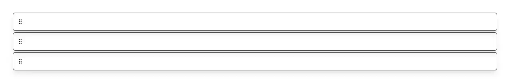

Drag-to-reorder list: grab a row's grip handle and drop it in a new place — and do the same thing from the keyboard, which is the half that is normally missing. Reach for it whenever the order itself is the data: reordering tasks or a to-do list, ranking priorities, choices or search results, arranging table columns, form fields or a form builder's questions, dashboard widgets, nav and sidebar links, playlist tracks, an image or gallery order, quiz question order, steps in a workflow, checklist or recipe, saved filters and views, a queue of jobs, and the cards inside one kanban column. Common asks it answers: "sortable list react", "drag and drop list react", "reorderable list", "drag to reorder", "drag handle list", "reorder items react", "draggable list order", "move item up and down", "shadcn drag and drop", "shadcn sortable", "sortable list without a library", "drag and drop with no dependencies react", "dnd-kit alternative", "@dnd-kit/sortable simpler", "react-beautiful-dnd replacement", "react-beautiful-dnd is deprecated what now", "react-sortable-hoc alternative", "SortableJS react", "framer-motion Reorder alternative", "accessible drag and drop react", "keyboard accessible reorder list", "drag and drop is not keyboard accessible", "screen reader drag and drop announcements", "aria-live drag and drop", "roving tabindex list", "html5 drag and drop does not work on touch", "drag to reorder on mobile", "reorder list with different row heights", "next.js drag and drop list", "並び替え ドラッグ react". Official shadcn/ui ships nothing that reorders, and it is not close: across all sixty-three of its registry entries (sixty-two fetchable; questionnaire is listed but 404s), sortable, draggable, dnd, reorder, dragstart, onDragStart and pointerdown are every one of them a zero hit — and so are aria-live and roving, which is the other half of the problem. So this gets hand-rolled each time, and the keyboard is what gets dropped, because a mouse-only reorder looks finished. Here the whole interaction works without a mouse: Tab reaches the list once through a roving tabindex, arrow keys walk it, Space or Enter picks a row up, arrows move the picked-up row, Space or Enter drops it, Escape puts it back where it started, and each step is spoken through an assertive live region ("Picked up Design review. Position 2 of 5."). Every announcement — the handle label, the instructions, and the grabbed, moved, dropped and cancelled sentences — is an overridable function, so it translates. Dragging is plain pointer events: no dnd-kit, no react-dnd, no HTML5 drag-and-drop. That is what makes touch work at all (the HTML5 API has never fired on a phone), and it is why rows of different heights land exactly where they look like they will — every row is measured once at the start of a drag and displaced with transforms rather than guessed at from a uniform row height. Controlled: pass items ({ id, label } plus whatever else you carry) and persist the array onReorder hands back; renderItem draws the row body beside the handle and is told the row's index and whether it is being dragged or grabbed, and itemClassName styles the row. Within pulld it is the ordering counterpart to upload-list and bulk-action-bar, which act on rows rather than arrange them, and to tree-view, which shows a hierarchy rather than a sequence. One file, and its only dependency is lucide-react for the grip icon.

Rendered on the shadcn default neutral palette with harness-generated props.
pnpm dlx shadcn@4.21.0 add @pulld/sortable-list
| licence | POINTER |
|---|---|
| primitive base | none |
| type | registry:ui |
| files | src/components/ui/sortable-list.tsx |
| npm deps pulled | none beyond the pre-installed peer set |
| registry deps | — |
| semantic / palette / hex | 6 / 0 / 0 |
| writes shared ui/ | yes — can overwrite the project’s own primitives |